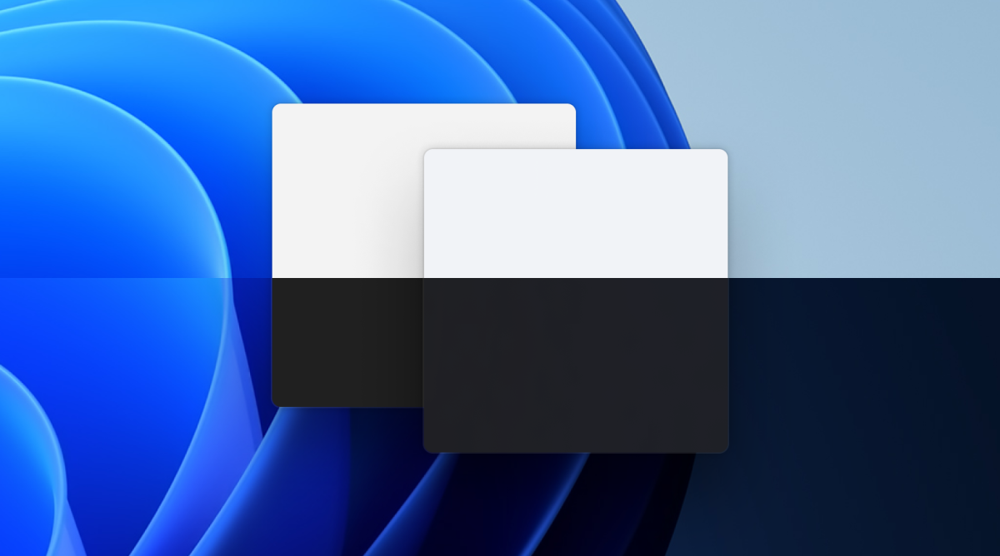
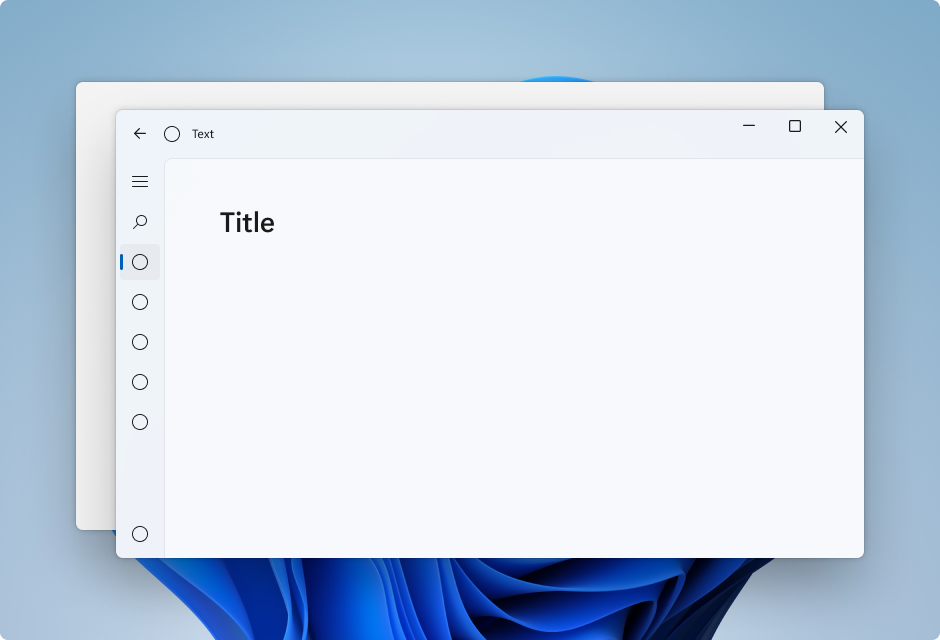
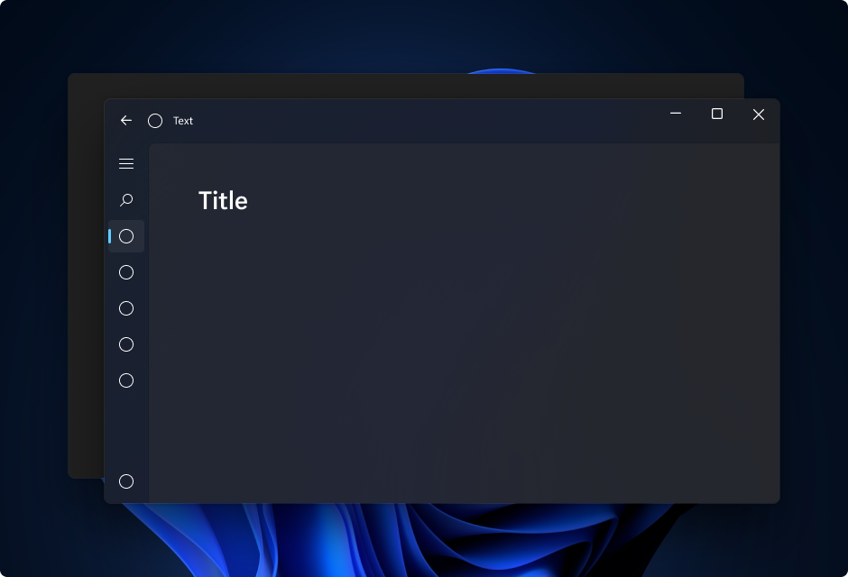
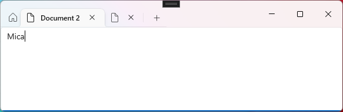
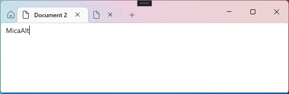
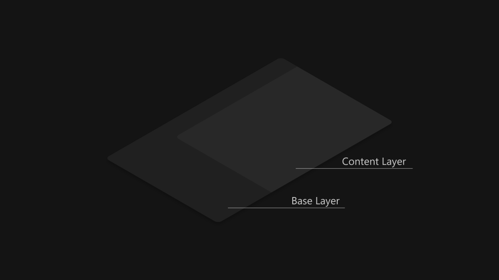
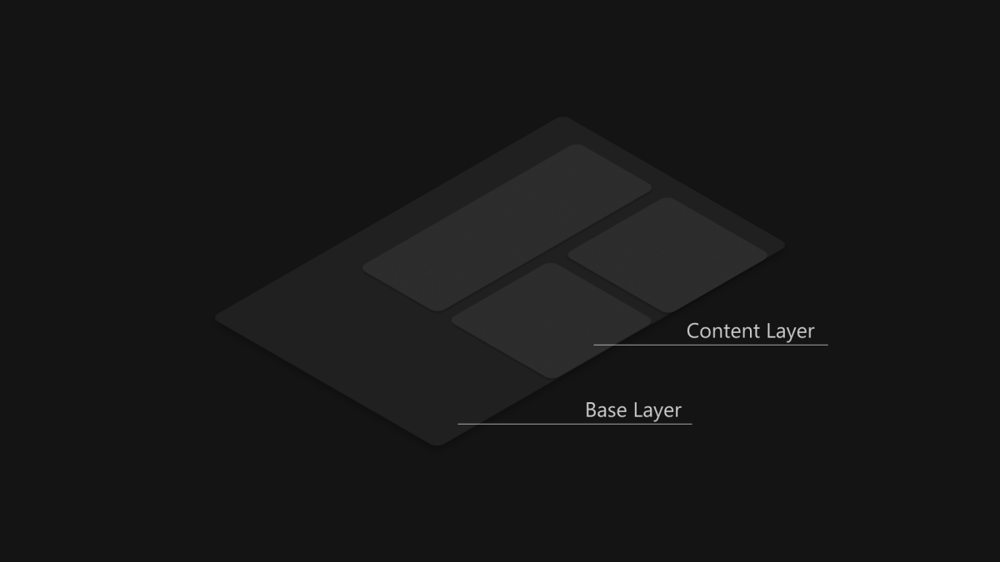
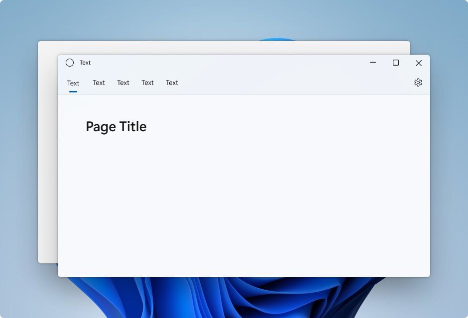
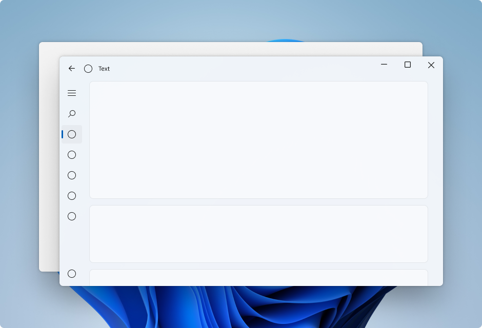

Mica material
Mica is an opaque, dynamic material that incorporates theme and desktop wallpaper to paint the background of long-lived windows such as apps and settings. You can apply Mica to your application backdrop to delight users and create visual hierarchy, aiding productivity, by increasing clarity about which window is in focus. Mica is specifically designed for app performance as it only samples the desktop wallpaper once to create its visualization. Mica is available for UWP apps that use WinUI 2 and apps that use Windows App SDK 1.1 or later, while running on Windows 11 version 22000 or later.

Mica in light theme

Mica in dark theme

Mica Alt is a variant of Mica, with stronger tinting of the user's desktop background color. You can apply Mica Alt to your app's backdrop to provide a deeper visual hierarchy than Mica, especially when creating an app with a tabbed title bar. Mica Alt is available for apps that use Windows App SDK 1.1 or later, while running on Windows 11 version 22000 or later.
These images show the difference between Mica and Mica Alt in a title bar with tabs. The first image uses Mica and the second image uses Mica Alt.


When to use Mica or Mica Alt
Mica and Mica Alt are materials that appear on the backdrop of your application — behind all other content. Each material is opaque and incorporates the user's theme and desktop wallpaper to create its highly personalized appearance. As the user moves the window across the screen, the Mica material dynamically adapts to create a rich visualization using the wallpaper underneath the application. In addition, the material helps users focus on the current task by falling back to a neutral color when the app is inactive.
We recommend that you apply Mica or Mica Alt as the base layer of your app, and prioritize visibility in the title bar area. For more specific layering guidance see Layering and Elevation and the App layering with Mica section of this article.
Usability and adaptability
The Mica materials automatically adapt their appearance for a wide variety of devices and contexts. They are designed for performance as they capture the background wallpaper only once to create their visualizations.
In High Contrast mode, users continue to see the familiar background color of their choosing in place of Mica or Mica Alt. In addition, the Mica materials will appear as a solid fallback color (SolidBackgroundFillColorBase for Mica, SolidBackgroundFillColorBaseAlt for Mica Alt) when:
- The user turns off transparency in Settings > Personalization > Color.
- Battery Saver mode is activated.
- The app runs on low-end hardware.
- An app window on desktop deactivates.
- The Windows app is running on Xbox or HoloLens.
- The Windows version is below 22000.
App layering with Mica
Standard pattern content layer

Card pattern content layer

Mica is ideal as a foundation layer in your app's hierarchy due to its inactive and active states and subtle personalization. To follow the two-layer Layering and Elevation system, we encourage you to apply Mica as the base layer of your app and add an additional content layer that sits on top of the base layer. The content layer should pick up the material behind it, Mica, using the LayerFillColorDefaultBrush, a low-opacity solid color, as its background. Our recommended content layer patterns are:
- Standard pattern: A contiguous background for large areas that need a distinct hierarchical differentiation from the base layer. The
LayerFillColorDefaultBrushshould be applied to the container backgrounds of your WinUI app surfaces (e.g. Grids, StackPanels, Frames, etc.). - Card pattern: Segmented cards for apps that are designed with multiple sectioned and discontinuous UI components. For the definition of the card UI using the
LayerFillColorDefaultBrush, see Layering and Elevation guidance.
To give your app's window a seamless look, Mica should be visible in the title bar if you choose to apply the material to your app. You can show Mica in the title bar by extending your app into the non-client area and creating a transparent custom title bar. For more info, see Title bar.
The following examples showcase common implementations of the layering strategy with NavigationView where Mica is visible in the title bar area.
- Standard pattern in Left NavigationView.
- Standard pattern in Top NavigationView.
- Card pattern in Left NavigationView.
Standard pattern in Left NavigationView
By default, NavigationView in Left mode includes the content layer in its content area. This example extends Mica into the title bar area and creates a custom title bar.
Standard pattern in Top NavigationView
By default, NavigationView in Top mode includes the content layer in its content area. This example extends Mica into the title bar area and creates a custom title bar.

Card pattern in Left NavigationView
To follow the card pattern using a NavigationView you will need to remove the default content layer by overriding the background and border theme resources. Then, you can create the cards in the content area of the control. This example creates several cards, extends Mica into the title bar area, and creates a custom title bar. For more information on card UI, see Layering and Elevation guidance.

App layering with Mica Alt
Mica Alt is an alternative to Mica as a foundation layer in your app's hierarchy with the same features like inactive and active states and subtle personalization. We encourage you to apply Mica Alt as the base layer of your app when you need contrast between title bar elements and the commanding areas of your app (e.g. navigation, menus).
A common scenario for using Mica Alt is when you are creating an application with a tabbed title bar. To follow the Layering and Elevation guidance we encourage you to apply Mica Alt as the base layer of your app, add a commanding layer that sits on top of the base layer, and finally add an additional content layer that sits on top of the commanding layer. The commanding layer should pick up the material behind it, Mica Alt, using the LayerOnMicaBaseAltFillColorDefaultBrush, a low-opacity solid color, as its background. The content layer should pick up the layers below it, using the LayerFillColorDefaultBrush, another low-opacity solid color. The layer system is as follows:
- Mica Alt: The base layer.
- Commanding layer: Requires distinct hierarchical differentiation from the base layer. The
LayerOnMicaBaseAltFillColorDefaultBrushshould be applied to the commanding areas of your WinUI app surfaces (e.g. MenuBar, navigation structure, etc.) - Content layer: A contiguous background for large areas that need a distinct hierarchical differentiation from the commanding layer. The
LayerFillColorDefaultBrushshould be applied to the container backgrounds of your WinUI app surfaces (e.g. Grids, StackPanels, Frames, etc.).
To give your app's window a seamless look, Mica Alt should be visible in the title bar if you choose to apply the material to your app. You can show Mica Alt in the title bar by extending your app into the non-client area and creating a transparent custom title bar.
Recommendations
- Do set the background to transparent for all layers where you want to see Mica so the Mica shows through.
- Don't apply backdrop material more than once in an application.
- Don't apply backdrop material to a UI element. The backdrop material will not appear on the element itself. It will only appear if all layers between the UI element and the window are set to transparent.
Examples
The WinUI 3 Gallery app includes interactive examples of most WinUI 3 controls, features, and functionality. Get the app from the Microsoft Store or get the source code on GitHub
How to use Mica
You can use Mica in UWP apps that use WinUI 2, or in apps that use Windows App SDK 1.1 or later. You can use Mica Alt in apps that use Windows App SDK 1.1 or later.
Use Mica with the Windows App SDK
To use Mica in a WinUI 3 XAML app, see Apply Mica or Acrylic materials in desktop apps for Windows 11.
To use Mica in a Win32 app, see Apply Mica in Win32 desktop apps for Windows 11.
Use Mica with WinUI 2 for UWP
To use Mica in a UWP app with WinUI 2, see Apply Mica with WinUI 2 for UWP.